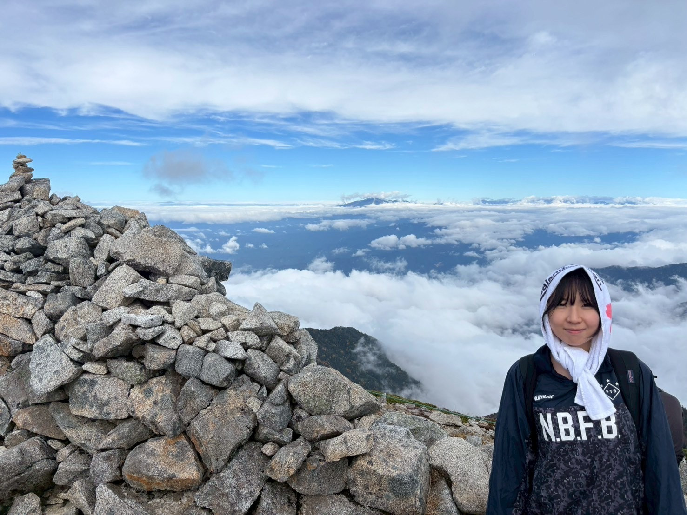

Yuna Park
I am currently a researcher at the Social Intelligence Research Team, Artificial Intelligence Research Center (AIRC), AIST . My research interests include image recognition using deep learning.
Publications
International Conferences
-
Y. Park, T. Takase, K. Kameyama, and M. Onishi,
"Affinity-Weighted RandAugment for Problem-Oriented Augmentation",
Proceedings of the 2024 International Joint Conference on Neural Networks (IJCNN) , 2024, pp. 1–8.
DOI: 10.1109/IJCNN60899.2024.10651376
Domestic Conferences (Japan)
-
朴 潤花，高瀬朝海，大西正輝，亀山啓輔，
「転移学習における効果的なデータ拡張の分析」，
情報論的学習理論ワークショップ（IBIS），1-051，2023年10月． -
朴 潤花，亀山啓輔，
「敵対的サンプルの生成法を活用したデータ拡張」，
電子情報通信学会総合大会，D-20-17，2023年3月．
Career
Education
-
Apr 2019 – Mar 2023
College of International Studies, University of Tsukuba -
Apr 2023 – Mar 2025
Master’s Program in Computer Science, Graduate School of Science and Technology, University of Tsukuba
Professional Experience
-
Aug 2023 – Mar 2025
AIST, Artificial Intelligence Research Center (AIRC)
Research Assistant -
Oct 2024 – Mar 2025
RIKEN, Center for Computational Science (R-CCS)
Research Intern -
Apr 2025 – Present
AIST, Artificial Intelligence Research Center (AIRC)
Researcher